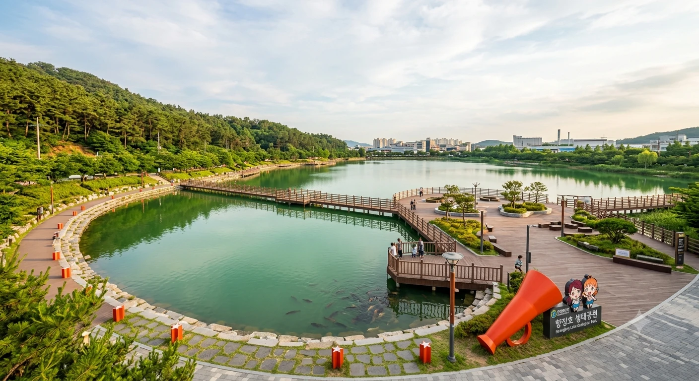

| 국가 | 대한민국 |
|---|---|
| 개원일 / 형성 | 자연호수 (회리천 중류 구간 자연 Pooling) 2011년 7월 14일 (수변 생태공원 지정) |
| 관리·운영 | 효빈광역시 북구청 공원녹지과 |
| 담수 면적 | 약 65,000㎡ |
| 수질 | 1급수 (나노 버블 생태 정화 공법 적용) |
| 상징 캐릭터 | 토야마 카스미 (BanG Dream! It's MyGO!!!!!) |
| 상징색 | ✦ 다홍색 (#FF5522) |
| 테마곡 | 별의 고동 / 이니셜 |
| 연계 교통 |
2호선 남전역 3번 출구 버스 연계 5분 6호선 오내역 2번 출구 버스 연계 5분 |
효빈광역시 북구 남전동과 실본동(법정동 채산동 관할)의 경계를 따라 흐르는 회리천(아야세 에리의 강) 중류 구간에 위치한 거대한 자연호수. 공식 병상 수는 없지만(...) 서구 과진역 인근 사야병원 및 북구 고송동 고송병원에 이어 효빈권 서브컬처 팬덤의 절대적인 추앙을 받는 세 번째 '광기의 메디컬... 아니, 멘탈 힐링 성지'로 불린다.
원래는 평범한 자연호수였으나, 호수의 한자 명칭인 '향징(香澄)'이 BanG Dream!의 주인공 토야마 카스미의 이름 한자인 '香澄'과 단 한 자의 오차도 없이 완벽하게 일치한다는 소름 돋는 사실이 재조명되면서, 전 세계 뱅드리머들과 포피파 팬덤 사이에서 "카스미의 우주적 기적이 낳은 비취색 오아시스"로 칭송받으며 대한민국 최고의 덕후 친화적 호수공원으로 자리 잡았다. 물론 시청에서는 우연의 일치일 뿐이라고 해명하지만, 박효빈 시장이 이 호수 앞에서 킹블레이드를 흔든 사진이 발견된 이후 해명은 의미를 잃었다(...)
향징호가 타 지역 호수공원들을 제치고 독보적인 팬덤(?)을 보유하게 된 이유는 원내 구석구석에 스며든 카스미의 마법 같은 캐릭터성 덕분이다.
사용자가 공유한 브라우저 화면에서 확인할 수 있듯이, 병원 이름의 한자 명칭 '香澄'은 토야마 카스미의 이름 한자 '香澄'과 완벽하게 일치한다.
香(향기 향) + 澄(맑을 징): 이 두 글자의 조합이 하필 토야마 카스미가 그토록 찾는 "반짝반짝 두근두근(키라키라 도키도키)"한 별빛의 이미지를 시각적, 청각적으로 완벽하게 구현하고 있다는 평을 받는다.
팬덤에서는 "향징호는 카스미가 1920년대 효빈시 도시계획에 영혼으로 관여했다"는 킹리적 갓심을 품을 수밖에 없는 완벽한 네이밍이라며 찬양한다. 지자체에서도 물 들어올 때 노를 젓겠다며 아예 공원 마스코트를 카스미와 리코를 섞어놓은 듯한 형태로 리뉴얼해 버렸다. 누마즈시와의 협약 덕분에 안전하니 안심합시다.
향징호의 물빛은 주변 산세의 녹음이 반사되어 묘하게 비취색(#35C7B6)을 띤다. 이 컬러가 하필 삼선대의 교색이자 미후네 시오리코의 이미지 컬러인 제이드 그린과 단 1의 오차도 없이 일치한다. 바람이 불어 비취색 물결이 찰랑거리는 날이면, 덕후들은 "시오리코의 결의의 빛(決意の光)이 호수를 물들였다"며 호수를 향해 합장을 올리는 진풍경을 연출한다. 시오리코 밈과 카스미 밈의 기적의 대통합(...)
회리천 중류 구간에 조성된 수변공원은 카스미의 캐릭터성을 원내 시스템에 영혼까지 갈아 넣었다.
남전역 방향과 가장 가까운 메인 진입로.
광장 한복판에는 대형 다홍색 메가폰 조형물이 세워져 있으며, 매년 7월 14일(카스미 생일)이 되면 전국에서 수천 명의 팬들이 모여 "반짝반짝 두근두근-!!"을 동시에 외치는 플래시몹을 벌인다. 탄성군 파출소에서도 이때만큼은 축제 경비로 인력을 대거 배치해 줄 정도다.
<아이♡스크림!>에 함께 참여한 우에하라 아유무의 마스코트인 '토끼' 모양으로 산책로를 깎아놓은 거대한 피크닉 구역. 주말만 되면 좀비 공대생들과 럽라이버들이 돗자리를 깔고 고구마 타르트를 먹으며 뒹굴거리는 평화로운 광경을 목격할 수 있다. 가끔 목줄 풀린 진짜 토끼(?)가 출몰하기도 한다.
와카나 시키의 캐러성에 맞춰 과학 실험실 리토르트 병 모양으로 설계된 최첨단 바닥분수.
여름철 낮 시간대에 가동되는데, 분수 주변에서 미스트가 뿜어져 나올 때 묘하게 액체 질소 연기 같은 시각 효과를 내어 초등학생들과 덕후들의 인기를 독차지하고 있다. 바람 불면 바람막이 점퍼가 다 젖으니 주의하자.
현재 공원 내 편의 시설 확충 계획에 따라, 인근 지역 상권과 연계한 특화 매점이 들어설 예정이다. 카스미의 친구 야마부키 사아야의 밈을 활용한 베이커리와 음료를 판매할 계획으로 알려져 팬들의 기대를 모으고 있다.
여느 신도시 인공호수들이 여름만 되면 녹조 라떼로 변해 악취를 풍기는 것과 달리, 향징호는 대한민국 수질 관리의 마스터피스로 불린다.
교통 접근성은 대한민국 호수공원 중 가히 탑 급이다.
일부 과격한 팬들은 4호선 카스미역(?)에서 내려서 감자튀김을 먹은 뒤, 2호선으로 환승해 남전역 향징호로 오는 '반짝반짝 광역 루트'를 성지순례 코스로 개척해 유행시키고 있다. 한자가 다른 건 무시하자(...)